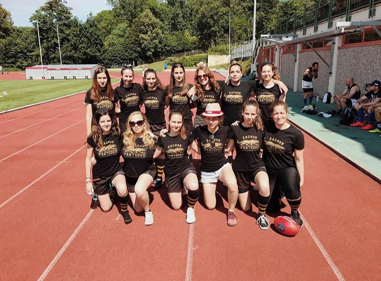
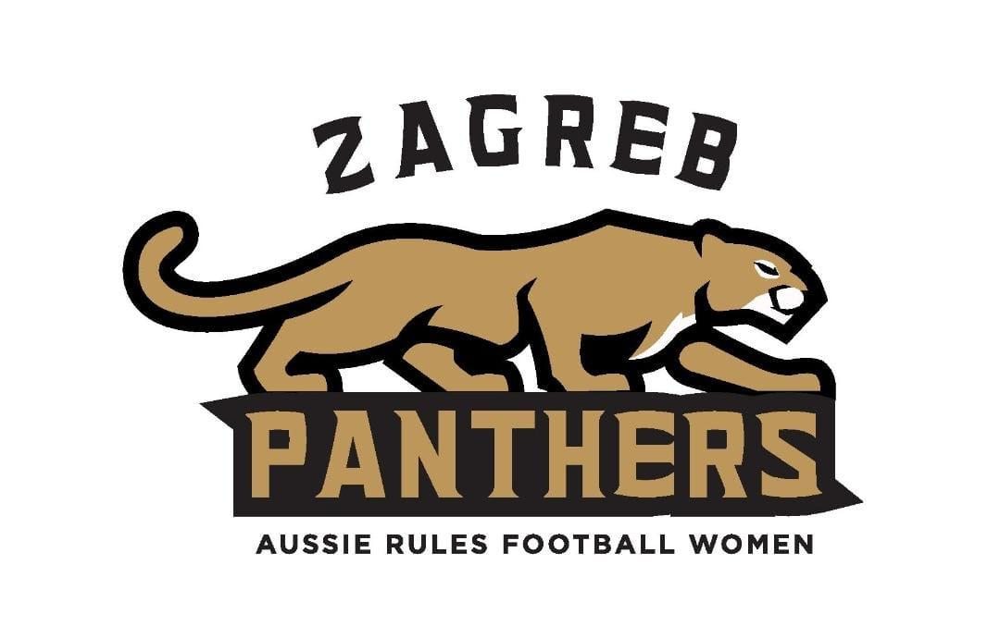
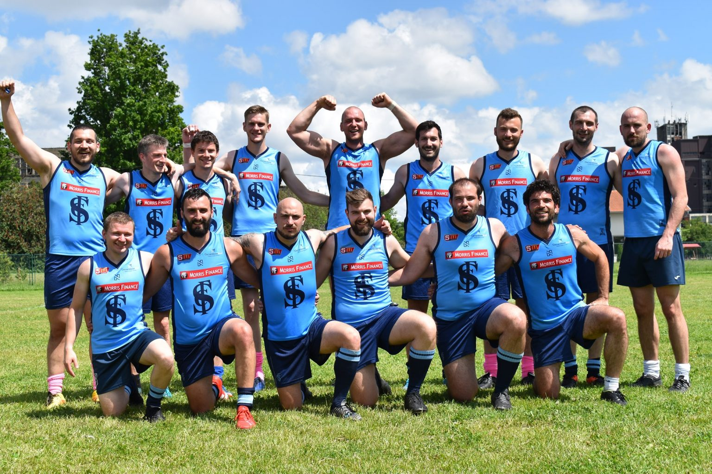
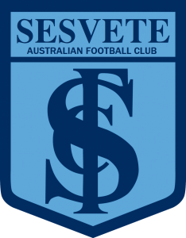
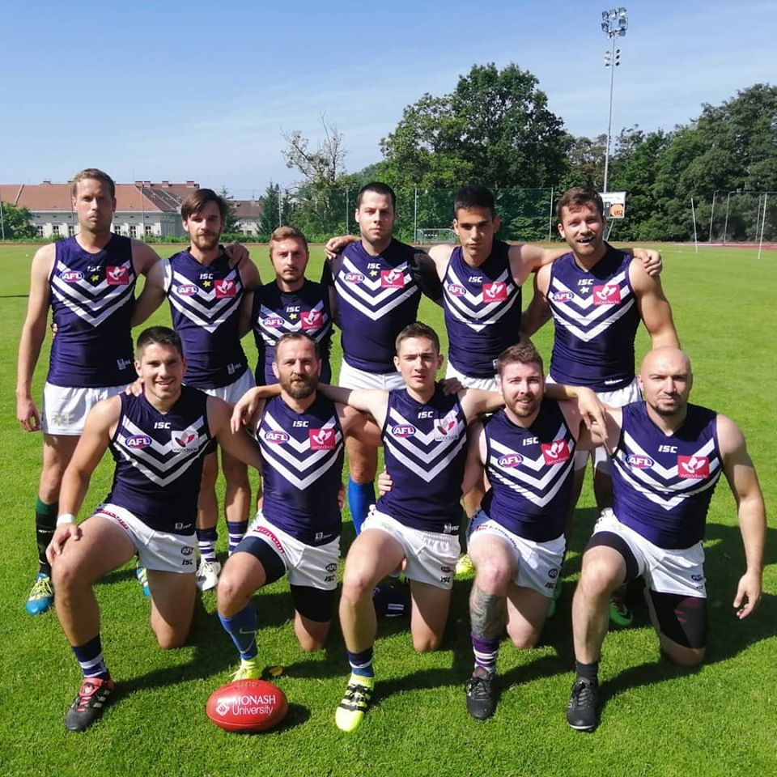
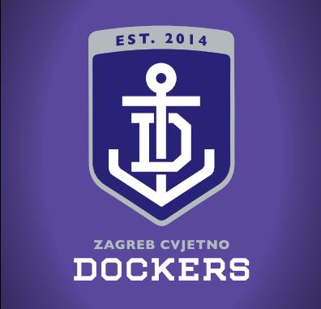
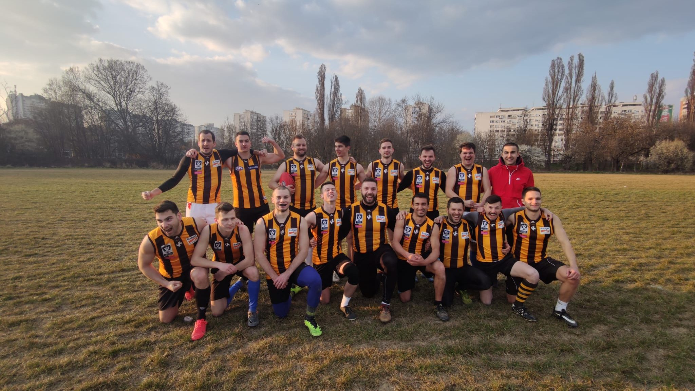
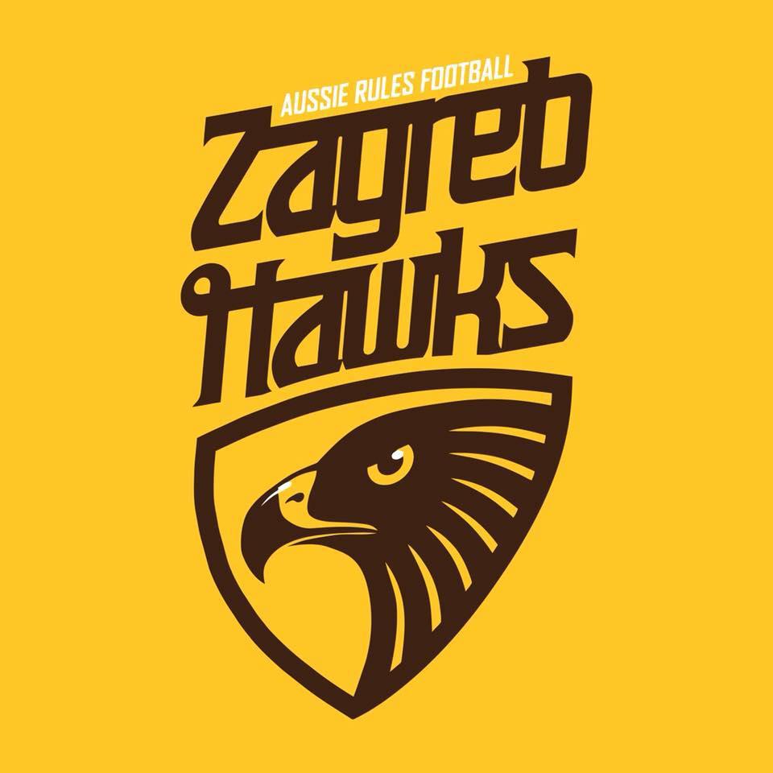

Iako se radi o jednoj maloj zajednici, SANH svake godine broji sve više i više ženskih i muških ekipa.

Zagreb Cvjetno Dockers osnovane su kao ŽKAN Zagreb Panthers i najstariji su zagrebački ženski klub australskog nogovmeta. Osnovane su 2016. godine suradnjom muških klubova Zagreb Hawks i Zapruđe Giants. Te godine igraju utakmice Hrvatske lige protiv cura iz Velike Gorice, VG Mambas. Stječući iskustvo kroz utakmice, čak 7 Pantera odlazi na EuroCup u Lisabon i sudjeluje u osvajanju brončane medalje. Bronca osvojena u Lisabonu je do sada ostala najveće međunarodno postignuće hrvatske ženske reprezentacije australskog nogometa. Pantere sudjeluju i na EuroCupu 2017. u Bordeauxu (7. mjesto), 2018. u Corku (4. mjesto), te 2019. u Norrtälje (7. mjesto). Pantere su igrale sezonu Hrvatske lige 2018./2019. protiv novoosnovanog kluba Sesvete Redlegs te tako našle dostojne protivnice i na domaćoj sceni. U budućim godinama Pantere se nadaju daljnjem jačanju kluba, prikupljanju još više članica, te konačno i osvajanju hrvatske lige, Hrvatskog kupa, Lige prvaka i svih ostalih natjecanja u kojima će sudjelovati.
Adresa: Horvaćanski zavoj, rugby igralište Mladost (iza KIF-a)
Kontakt: Nika Fučkar, 0915688303, njubito@gmail.com
Facebook: Zagreb Panthers
Instagram: @zagrebcvjetnodockersice
Hrvatski kup: Osvajači 2020., 2024.


Klub je osnovan krajem 2014. na inicijativu tri igrača Zagreb Hawksa (David Glavaš, Dinko Irsag, Dejan Pavković). Sesvete Double Blues sudjeluju u hrvatskoj i regionalnoj ligi, hrvatskom kupu, te su povremeni sudionik europske Lige prvaka. Ekipa trenira na pomoćnom terenu NK Sesveta u Bistričkoj ulici, a svi zainteresirani se mogu javiti i priključiti treninzima.
Adresa: Bistrička bb, Sesvete (treninzi)
Telefon: +385 95 5844 146 (Josip Karadža, predsjednik)
E-mail: kansesvete@gmail.com
HLAN Prvaci: 2017., 2019., 2021., 2022., 2023.
Hrvatski kup: 2016., 2017., 2019., 2022., 2023.


Zagreb Cvjetno Dockers je sljednik kluba Velika Gorica Bombers koji je 2011. osvojio prvenstvo Hrvatske. Nakon dogovora o suradnji sa AFL klubom Fremantle Dockers, klub 2013. postaje Velika Gorica Dockers, a 2014. seli u Zagreb i osniva se Zagreb Cvjetno Dockers. Tijekom svog postojanja klub je zabilježio iznimne rezultate, nekoliko naslova prvaka Hrvatske te Centralno-europskih prvaka. Od 2015. do 2019. klub je nastupao na Ligi prvaka te je u tom razdoblju konstantno među 10 najboljih klubova Europe. Zanimljiva podudarnost je što su u vrijeme dogovaranja partnerstva sa Fremantle Dockersima igrači često izlazili u kultni zagrebački klub Sidro što je ujedno i simbol kluba.
Adresa: Horvaćanski zavoj, Teren za australski nogomet (iza KIF-a)
Kontakt: Ivan (0989692814), ivan_nar@yahoo.com; Viktor (0989148041), viktor.kolcic@gmail.com
Facebook: ZCDockers
HLAN Prvaci: 2015., 2016.
CEAFL Osvajači: 2017., 2018.


Klub je osnovan 2005. kao prvi klub australskog nogometa u Hrvatskoj te je nosio ime Zagreb Giants. Klub mjenja ime 2006. godine u Zagreb Hawks koje ime ostaje do danas. Hawksi su dio obitelji u koju spada i profesionalni klubovi Hawthorn Hawksi i Box Hill Hawksi. Sudjelujemo u Hrvatskoj ligi australskog nogometa, srednjoeurpskoj ligi te povremeno u ligi prvaka. Klub se se temelji na vrijednostima kao što su rad, zajedništvo i poštenje.
Adresa: Hvarska 11, 10000 Zagreb
Kontakt: Josip Kravar (kravar13@gmail.com); Marko Belić (markobelich@gmail.com); Josip Habljak (josip.habljak@gmail.com)
HLAN Prvaci: 2013., 2014.
Hrvatski kup: 2013., 2014.
CAFL Osvajači: 2014., 2015., 2019.
